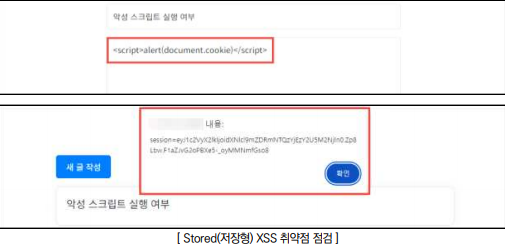
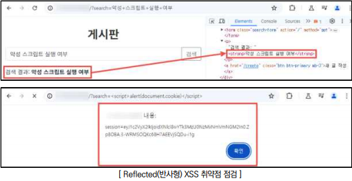
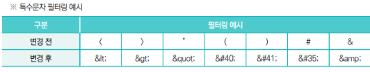
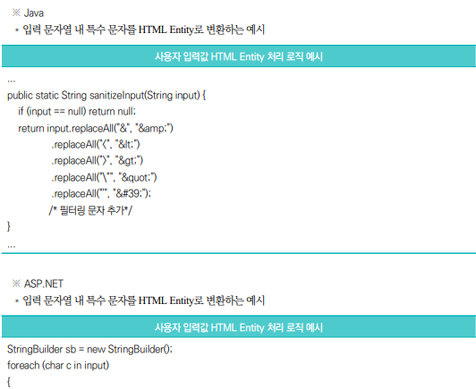
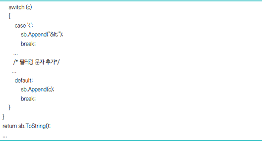
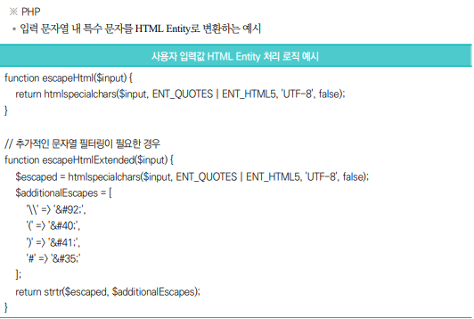

점검 목적
- 악성 스크립트가 다른 사용자의 브라우저에서 실행되는 취약점 존재 여부 점검
- 사용자 입력값에 대한 검증을 실시하여, 사용자 세션 탈취, 악성 코드 삽입 등의 악의적인 스크립트
실행을 차단하기 위함
XSS이란?
- 악의적인 스크립트를 웹 페이지에 삽입하여 사용자 세션 탈취, 키로깅, 피싱 공격 등을 유발하는 기법
종류
저장형(Stored)
반사형(Reflected
DOM
판단 기준
- 양호 : 사용자 입력값에 대해 검증 및 필터링이 이루어져, 악의적인 스크립트가 실행되지 않는 경우
- 취약 : 사용자 입력값에 대한 검증 및 필터링이 이루어지지 않으며, HTML 코드가 입력 및 실행되는 경우
조치 방법
- 특수문자에 대해 필터링 처리와 출력값 인코딩(HTML 엔티티, 이스케이프 등)을 적용하여 악성
스크립트 실행을 방지하며, 부득이하게 HTML 코드를 사용해야 하는 경우 화이트리스트 방식을 적용해
허용된 HTML 코드만 처리하도록 설정
점검 방법
Step 1) 사용자 입력값을 전달받아 HTML 상에 렌더링되는 애플리케이션(게시판, 검색 등)에 스크립트 구문
삽입 후 실행되는지 확인
게시글 작성 시 스크립트 구문을 삽입하여 글 열람 시 스크립트가 동작하는 경우(Stored XSS)

입력값이 HTML 상에 렌더링되어 스크립트가 삽입된 URL 접근 시 스크립트가 동작하는 경우(Reflected
XSS)

조치 방법
1. 크로스사이트 스크립팅 공격에 사용되는 특수문자에 대하여 입력값 검증 및 필터링(HTML 엔티티, 이스케이프 등)처리 로직을 서버 사이드에서 구현
HTML 엔티티란?
- HTML에서 특수 문자를 브라우저에 정확하게 표시하기 위해 사용하는 대체 코드 입니다
Ex)
< → <
서버나 프론트엔드에서
<, >
와 같은 기호를 엔티티로 치환(Escaping)하여, 브라우저가 코드를 '실행'하지 않고 단순한 '텍스트'로 '표시'만 하게 만드는 작업임
2. 부득이하게 HTML 코드를 사용해야 하는 경우 화이트리스트 방식을 적용하여 허용된 HTML 코드만 처리
3. 웹 방화벽에서 웹 태그 및 스크립트 관련 특수문자 필터링 룰셋을 적용하여 추가적인 방어 확보
4. 세션 탈취 방지를 위해 쿠키에 HttpOnly, Secure, SameSite 옵션을 설정하여 노출되지 않도록 보호

 
